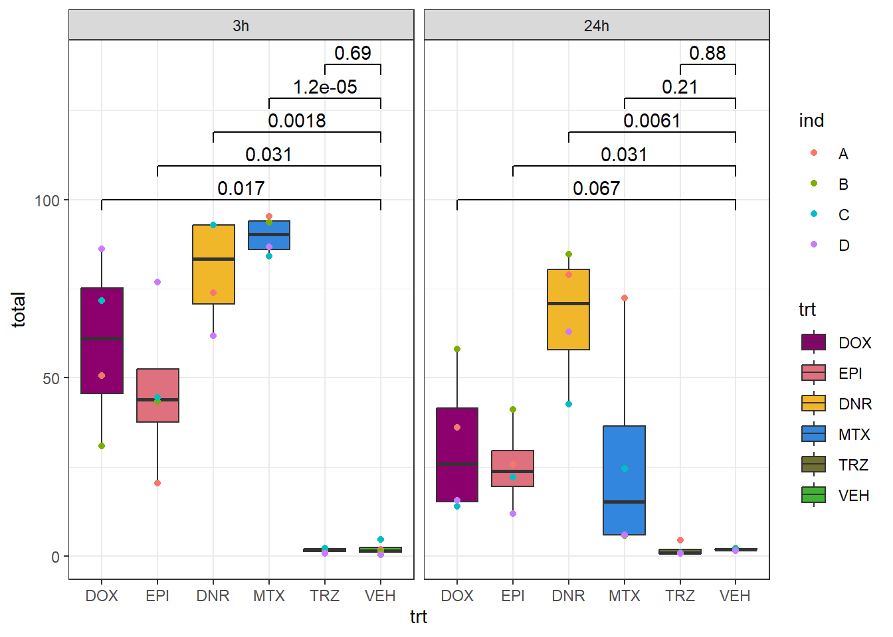
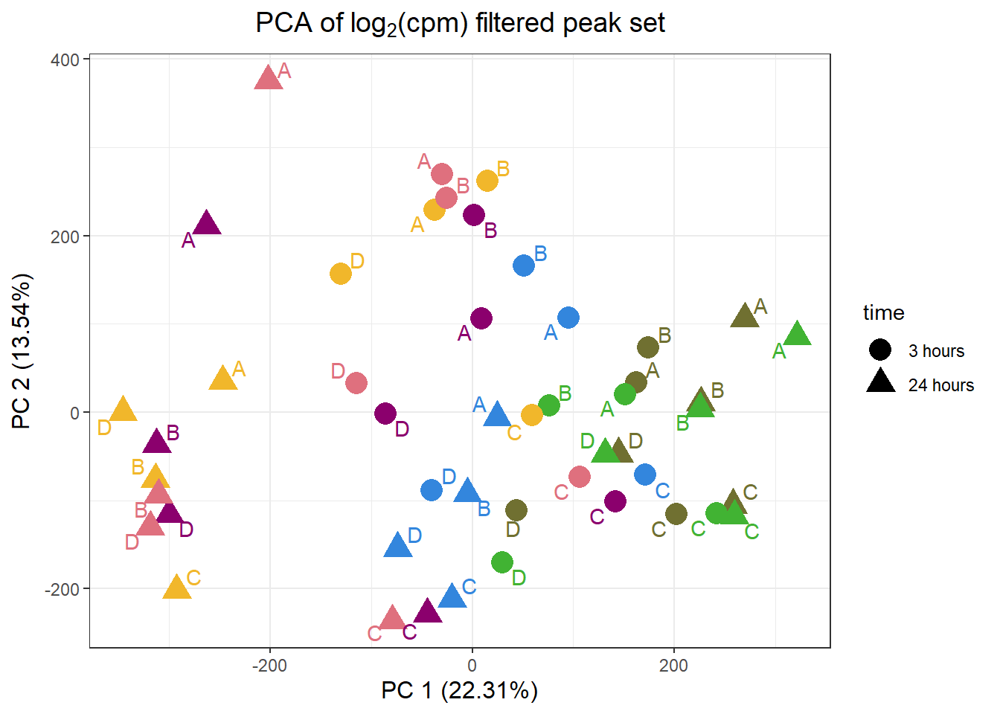

Figure_1
Renee Matthews
2025-08-06
Last updated: 2025-08-07
Checks: 6 1
Knit directory: ATAC_learning/
This reproducible R Markdown analysis was created with workflowr (version 1.7.1). The Checks tab describes the reproducibility checks that were applied when the results were created. The Past versions tab lists the development history.
The R Markdown file has unstaged changes. To know which version of
the R Markdown file created these results, you’ll want to first commit
it to the Git repo. If you’re still working on the analysis, you can
ignore this warning. When you’re finished, you can run
wflow_publish to commit the R Markdown file and build the
HTML.
Great job! The global environment was empty. Objects defined in the global environment can affect the analysis in your R Markdown file in unknown ways. For reproduciblity it’s best to always run the code in an empty environment.
The command set.seed(20231016) was run prior to running
the code in the R Markdown file. Setting a seed ensures that any results
that rely on randomness, e.g. subsampling or permutations, are
reproducible.
Great job! Recording the operating system, R version, and package versions is critical for reproducibility.
Nice! There were no cached chunks for this analysis, so you can be confident that you successfully produced the results during this run.
Great job! Using relative paths to the files within your workflowr project makes it easier to run your code on other machines.
Great! You are using Git for version control. Tracking code development and connecting the code version to the results is critical for reproducibility.
The results in this page were generated with repository version c69fb9f. See the Past versions tab to see a history of the changes made to the R Markdown and HTML files.
Note that you need to be careful to ensure that all relevant files for
the analysis have been committed to Git prior to generating the results
(you can use wflow_publish or
wflow_git_commit). workflowr only checks the R Markdown
file, but you know if there are other scripts or data files that it
depends on. Below is the status of the Git repository when the results
were generated:
Ignored files:
Ignored: .RData
Ignored: .Rhistory
Ignored: .Rproj.user/
Ignored: analysis/H3K27ac_integration_noM.Rmd
Ignored: data/ACresp_SNP_table.csv
Ignored: data/ARR_SNP_table.csv
Ignored: data/All_merged_peaks.tsv
Ignored: data/CAD_gwas_dataframe.RDS
Ignored: data/CTX_SNP_table.csv
Ignored: data/Collapsed_expressed_NG_peak_table.csv
Ignored: data/DEG_toplist_sep_n45.RDS
Ignored: data/FRiP_first_run.txt
Ignored: data/Final_four_data/
Ignored: data/Frip_1_reads.csv
Ignored: data/Frip_2_reads.csv
Ignored: data/Frip_3_reads.csv
Ignored: data/Frip_4_reads.csv
Ignored: data/Frip_5_reads.csv
Ignored: data/Frip_6_reads.csv
Ignored: data/GO_KEGG_analysis/
Ignored: data/HF_SNP_table.csv
Ignored: data/Ind1_75DA24h_dedup_peaks.csv
Ignored: data/Ind1_TSS_peaks.RDS
Ignored: data/Ind1_firstfragment_files.txt
Ignored: data/Ind1_fragment_files.txt
Ignored: data/Ind1_peaks_list.RDS
Ignored: data/Ind1_summary.txt
Ignored: data/Ind2_TSS_peaks.RDS
Ignored: data/Ind2_fragment_files.txt
Ignored: data/Ind2_peaks_list.RDS
Ignored: data/Ind2_summary.txt
Ignored: data/Ind3_TSS_peaks.RDS
Ignored: data/Ind3_fragment_files.txt
Ignored: data/Ind3_peaks_list.RDS
Ignored: data/Ind3_summary.txt
Ignored: data/Ind4_79B24h_dedup_peaks.csv
Ignored: data/Ind4_TSS_peaks.RDS
Ignored: data/Ind4_V24h_fraglength.txt
Ignored: data/Ind4_fragment_files.txt
Ignored: data/Ind4_fragment_filesN.txt
Ignored: data/Ind4_peaks_list.RDS
Ignored: data/Ind4_summary.txt
Ignored: data/Ind5_TSS_peaks.RDS
Ignored: data/Ind5_fragment_files.txt
Ignored: data/Ind5_fragment_filesN.txt
Ignored: data/Ind5_peaks_list.RDS
Ignored: data/Ind5_summary.txt
Ignored: data/Ind6_TSS_peaks.RDS
Ignored: data/Ind6_fragment_files.txt
Ignored: data/Ind6_peaks_list.RDS
Ignored: data/Ind6_summary.txt
Ignored: data/Knowles_4.RDS
Ignored: data/Knowles_5.RDS
Ignored: data/Knowles_6.RDS
Ignored: data/LiSiLTDNRe_TE_df.RDS
Ignored: data/MI_gwas.RDS
Ignored: data/SNP_GWAS_PEAK_MRC_id
Ignored: data/SNP_GWAS_PEAK_MRC_id.csv
Ignored: data/SNP_gene_cat_list.tsv
Ignored: data/SNP_supp_schneider.RDS
Ignored: data/TE_info/
Ignored: data/TFmapnames.RDS
Ignored: data/all_TSSE_scores.RDS
Ignored: data/all_four_filtered_counts.txt
Ignored: data/aln_run1_results.txt
Ignored: data/anno_ind1_DA24h.RDS
Ignored: data/anno_ind4_V24h.RDS
Ignored: data/annotated_gwas_SNPS.csv
Ignored: data/background_n45_he_peaks.RDS
Ignored: data/cardiac_muscle_FRIP.csv
Ignored: data/cardiomyocyte_FRIP.csv
Ignored: data/col_ng_peak.csv
Ignored: data/cormotif_full_4_run.RDS
Ignored: data/cormotif_full_4_run_he.RDS
Ignored: data/cormotif_full_6_run.RDS
Ignored: data/cormotif_full_6_run_he.RDS
Ignored: data/cormotif_probability_45_list.csv
Ignored: data/cormotif_probability_45_list_he.csv
Ignored: data/cormotif_probability_all_6_list.csv
Ignored: data/cormotif_probability_all_6_list_he.csv
Ignored: data/datasave.RDS
Ignored: data/embryo_heart_FRIP.csv
Ignored: data/enhancer_list_ENCFF126UHK.bed
Ignored: data/enhancerdata/
Ignored: data/filt_Peaks_efit2.RDS
Ignored: data/filt_Peaks_efit2_bl.RDS
Ignored: data/filt_Peaks_efit2_n45.RDS
Ignored: data/first_Peaksummarycounts.csv
Ignored: data/first_run_frag_counts.txt
Ignored: data/full_bedfiles/
Ignored: data/gene_ref.csv
Ignored: data/gwas_1_dataframe.RDS
Ignored: data/gwas_2_dataframe.RDS
Ignored: data/gwas_3_dataframe.RDS
Ignored: data/gwas_4_dataframe.RDS
Ignored: data/gwas_5_dataframe.RDS
Ignored: data/high_conf_peak_counts.csv
Ignored: data/high_conf_peak_counts.txt
Ignored: data/high_conf_peaks_bl_counts.txt
Ignored: data/high_conf_peaks_counts.txt
Ignored: data/hits_files/
Ignored: data/hyper_files/
Ignored: data/hypo_files/
Ignored: data/ind1_DA24hpeaks.RDS
Ignored: data/ind1_TSSE.RDS
Ignored: data/ind2_TSSE.RDS
Ignored: data/ind3_TSSE.RDS
Ignored: data/ind4_TSSE.RDS
Ignored: data/ind4_V24hpeaks.RDS
Ignored: data/ind5_TSSE.RDS
Ignored: data/ind6_TSSE.RDS
Ignored: data/initial_complete_stats_run1.txt
Ignored: data/left_ventricle_FRIP.csv
Ignored: data/median_24_lfc.RDS
Ignored: data/median_3_lfc.RDS
Ignored: data/mergedPeads.gff
Ignored: data/mergedPeaks.gff
Ignored: data/motif_list_full
Ignored: data/motif_list_n45
Ignored: data/motif_list_n45.RDS
Ignored: data/multiqc_fastqc_run1.txt
Ignored: data/multiqc_fastqc_run2.txt
Ignored: data/multiqc_genestat_run1.txt
Ignored: data/multiqc_genestat_run2.txt
Ignored: data/my_hc_filt_counts.RDS
Ignored: data/my_hc_filt_counts_n45.RDS
Ignored: data/n45_bedfiles/
Ignored: data/n45_files
Ignored: data/other_papers/
Ignored: data/peakAnnoList_1.RDS
Ignored: data/peakAnnoList_2.RDS
Ignored: data/peakAnnoList_24_full.RDS
Ignored: data/peakAnnoList_24_n45.RDS
Ignored: data/peakAnnoList_3.RDS
Ignored: data/peakAnnoList_3_full.RDS
Ignored: data/peakAnnoList_3_n45.RDS
Ignored: data/peakAnnoList_4.RDS
Ignored: data/peakAnnoList_5.RDS
Ignored: data/peakAnnoList_6.RDS
Ignored: data/peakAnnoList_Eight.RDS
Ignored: data/peakAnnoList_full_motif.RDS
Ignored: data/peakAnnoList_n45_motif.RDS
Ignored: data/siglist_full.RDS
Ignored: data/siglist_n45.RDS
Ignored: data/summarized_peaks_dataframe.txt
Ignored: data/summary_peakIDandReHeat.csv
Ignored: data/test.list.RDS
Ignored: data/testnames.txt
Ignored: data/toplist_6.RDS
Ignored: data/toplist_full.RDS
Ignored: data/toplist_full_DAR_6.RDS
Ignored: data/toplist_n45.RDS
Ignored: data/trimmed_seq_length.csv
Ignored: data/unclassified_full_set_peaks.RDS
Ignored: data/unclassified_n45_set_peaks.RDS
Ignored: data/xstreme/
Untracked files:
Untracked: RNA_seq_integration.Rmd
Untracked: Rplot.pdf
Untracked: Sig_meta
Untracked: analysis/.gitignore
Untracked: analysis/Cormotif_analysis_testing diff.Rmd
Untracked: analysis/Diagnosis-tmm.Rmd
Untracked: analysis/Expressed_RNA_associations.Rmd
Untracked: analysis/IF_counts_20x.Rmd
Untracked: analysis/Jaspar_motif_DAR_paper.Rmd
Untracked: analysis/LFC_corr.Rmd
Untracked: analysis/SVA.Rmd
Untracked: analysis/Tan2020.Rmd
Untracked: analysis/making_master_peaks_list.Rmd
Untracked: analysis/my_hc_filt_counts.csv
Untracked: code/Concatenations_for_export.R
Untracked: code/IGV_snapshot_code.R
Untracked: code/LongDARlist.R
Untracked: code/just_for_Fun.R
Untracked: my_plot.pdf
Untracked: my_plot.png
Untracked: output/cormotif_probability_45_list.csv
Untracked: output/cormotif_probability_all_6_list.csv
Untracked: setup.RData
Unstaged changes:
Modified: ATAC_learning.Rproj
Modified: analysis/AC_shared_analysis.Rmd
Modified: analysis/AF_HF_SNPs.Rmd
Modified: analysis/Cardiotox_SNPs.Rmd
Modified: analysis/Cormotif_analysis.Rmd
Modified: analysis/DEG_analysis.Rmd
Modified: analysis/Figure_1.Rmd
Modified: analysis/H3K27ac_integration.Rmd
Modified: analysis/Jaspar_motif.Rmd
Modified: analysis/Jaspar_motif_ff.Rmd
Modified: analysis/SNP_TAD_peaks.Rmd
Modified: analysis/TE_analysis_norm.Rmd
Modified: analysis/final_four_analysis.Rmd
Modified: analysis/index.Rmd
Note that any generated files, e.g. HTML, png, CSS, etc., are not included in this status report because it is ok for generated content to have uncommitted changes.
These are the previous versions of the repository in which changes were
made to the R Markdown (analysis/Figure_1.Rmd) and HTML
(docs/Figure_1.html) files. If you’ve configured a remote
Git repository (see ?wflow_git_remote), click on the
hyperlinks in the table below to view the files as they were in that
past version.
| File | Version | Author | Date | Message |
|---|---|---|---|---|
| Rmd | c69fb9f | reneeisnowhere | 2025-08-07 | wflow_publish("analysis/Figure_1.Rmd") |
| html | 67a1456 | reneeisnowhere | 2025-08-07 | Build site. |
| Rmd | 26b809c | reneeisnowhere | 2025-08-07 | first commit |
| html | f170d5f | reneeisnowhere | 2025-04-30 | Build site. |
| Rmd | 2275802 | reneeisnowhere | 2025-04-30 | update site yml file |
| html | 3c8d60b | E. Renee Matthews | 2025-02-21 | Build site. |
| Rmd | 67b47a9 | E. Renee Matthews | 2025-02-21 | wflow_publish("analysis/Figure_1.Rmd") |
| html | 5a24a87 | E. Renee Matthews | 2025-02-21 | Build site. |
| Rmd | 80c0b6b | E. Renee Matthews | 2025-02-21 | adding external image |
| html | d82300d | E. Renee Matthews | 2025-02-21 | Build site. |
| Rmd | 19f89cc | E. Renee Matthews | 2025-02-21 | adding external image |
| html | 22b314f | E. Renee Matthews | 2025-02-21 | Build site. |
| Rmd | 0964e7c | E. Renee Matthews | 2025-02-21 | adding external image |
| html | 0872582 | E. Renee Matthews | 2025-02-21 | Build site. |
| Rmd | d0ac226 | E. Renee Matthews | 2025-02-21 | adding external image |
| html | 7db849f | E. Renee Matthews | 2025-02-21 | Build site. |
| Rmd | 25af13e | E. Renee Matthews | 2025-02-21 | Adding first figure |
package loading
library(tidyverse)
library(kableExtra)
library(broom)
library(RColorBrewer)
library("TxDb.Hsapiens.UCSC.hg38.knownGene")
library("org.Hs.eg.db")
library(rtracklayer)
library(ggfortify)
library(readr)
library(BiocGenerics)
library(gridExtra)
library(VennDiagram)
library(scales)
library(ggVennDiagram)
library(BiocParallel)
library(ggpubr)
library(edgeR)
library(genomation)
library(ggsignif)
library(plyranges)
library(ggrepel)
library(ComplexHeatmap)
library(cowplot)
library(smplot2)
library(readxl)drug_pal <- c("#8B006D","#DF707E","#F1B72B", "#3386DD","#707031","#41B333")
prop_var_percent <- function(pca_result){
# Ensure the input is a PCA result object
if (!inherits(pca_result, "prcomp")) {
stop("Input must be a result from prcomp()")
}
# Get the standard deviations from the PCA result
sdev <- pca_result$sdev
# Calculate the proportion of variance
proportion_variance <- (sdev^2) / sum(sdev^2)*100
return(proportion_variance)
}Figure 1.A, B and C: Anthracycline treatment of iPSC-CMs results in DNA damage and chromatin changes.
knitr::include_graphics("assets/Figure\ 1.png", error=FALSE)
| Version | Author | Date |
|---|---|---|
| d64bc29 | E. Renee Matthews | 2025-02-21 |
knitr::include_graphics("docs/assets/Figure\ 2.png",error = FALSE)
Figure 1.D: Quantification of the proportion of DNA damage-associated nuclei following treatment with DOX, EPI,DNR, MTX, TRZ, and VEH for three and 24 hours.
drug_pal <- c("#8B006D","#DF707E","#F1B72B", "#3386DD","#707031","#41B333")
Nuclei_gamma_count_87<- read_delim("data/Final_four_data/re_analysis/IF_data/Nuclei_gamma_count_87.txt",delim="\t")
Nuclei_gamma_count_77<- read_delim("data/Final_four_data/re_analysis/IF_data/Nuclei_gamma_count_77.txt",delim="\t")
Nuclei_gamma_count_71<- read_delim("data/Final_four_data/re_analysis/IF_data/Nuclei_gamma_count_71.txt",delim="\t")
Nuclei_gamma_count_75<- read_delim("data/Final_four_data/re_analysis/IF_data/Nuclei_gamma_count_75.txt",delim="\t")
Ind_A_table <- Nuclei_gamma_count_87 %>%
dplyr::select(Sample,percentage) %>%
separate_wider_delim(Sample,delim = "_",names = c("time","ind","trt","focus"),too_many = "merge") %>%
group_by(trt,time) %>%
mutate(group_number = rep(c("A","B"), length.out = dplyr::n())) %>%
mutate(trt=if_else(trt=="MTZ","MTX",trt)) %>%
ungroup() %>%
pivot_wider(., id_cols=c(time, ind,trt), names_from = group_number, values_from = percentage) %>%
rowwise() %>%
mutate(total = round(mean(c_across(c(A, B)), na.rm = TRUE), digits = 1)) %>%
ungroup() %>%
mutate(ind="A")
Ind_B_table <- Nuclei_gamma_count_77 %>%
dplyr::select(Sample,percentage) %>%
separate_wider_delim(Sample,delim = "_",names = c("time","ind","trt","focus"),too_many = "merge") %>%
group_by(trt,time) %>%
mutate(group_number = rep(c("A","B"), length.out = dplyr::n())) %>%
mutate(trt=if_else(trt=="MTZ","MTX",trt)) %>%
ungroup() %>%
pivot_wider(., id_cols=c(time, ind,trt), names_from = group_number, values_from = percentage) %>%
rowwise() %>%
mutate(total = round(mean(c_across(c(A, B)), na.rm = TRUE), digits = 1)) %>%
ungroup() %>%
mutate(ind="B")
Ind_C_table <- Nuclei_gamma_count_71 %>%
dplyr::select(Sample,percentage) %>%
separate_wider_delim(Sample,delim = "_",names = c("time","ind","trt","focus"),too_many = "merge") %>%
group_by(trt,time) %>%
mutate(group_number = rep(c("A","B"), length.out = dplyr::n())) %>%
mutate(trt=if_else(trt=="MTZ","MTX",trt)) %>%
ungroup() %>%
pivot_wider(., id_cols=c(time, ind,trt), names_from = group_number, values_from = percentage) %>%
rowwise() %>%
mutate(total = round(mean(c_across(c(A, B)), na.rm = TRUE), digits = 1)) %>%
ungroup() %>%
mutate(ind="C")
Ind_D_table <- Nuclei_gamma_count_75 %>%
dplyr::select(Sample,percentage) %>%
separate_wider_delim(Sample,delim = "_",names = c("time","ind","trt","focus"),too_many = "merge") %>%
group_by(trt,time) %>%
mutate(group_number = rep(c("A","B"), length.out = dplyr::n())) %>%
mutate(trt=if_else(trt=="MTZ","MTX",trt)) %>%
ungroup() %>%
pivot_wider(., id_cols=c(time, ind,trt), names_from = group_number, values_from = percentage) %>%
rowwise() %>%
mutate(total = round(mean(c_across(c(A, B)), na.rm = TRUE), digits = 1)) %>%
ungroup() %>%
mutate(ind="D")
bind_rows(Ind_A_table,Ind_B_table) %>%
bind_rows(., Ind_C_table) %>%
bind_rows(., Ind_D_table) %>%
mutate(time=factor(time, levels =c("3h","24h")),
trt=factor(trt, levels = c("DOX","EPI","DNR","MTX","TRZ","VEH"))) %>%
ggplot(.,aes(x=trt, y=total))+
geom_boxplot(aes(fill=trt))+
geom_point(aes(colour = ind))+
ggsignif:: geom_signif(comparisons = list(
c("VEH", "DOX"),
c("VEH", "EPI"),
c("VEH", "DNR"),
c("VEH", "MTX"),
c("VEH", "TRZ")),
step_increase = 0.1,
map_signif_level = FALSE,
test = "t.test")+
facet_wrap(~time)+
theme_bw()+
scale_fill_manual(values=drug_pal)
| Version | Author | Date |
|---|---|---|
| 67a1456 | reneeisnowhere | 2025-08-07 |
Figure 1.E: Principal component analysis of ATAC-seq-derived accessibility measurements across 48 samples
filt_counts_raw <- readRDS("data/Final_four_data/ATAC_filtered_raw_counts_allsamples.RDS")
filt_raw_counts_noY <- filt_counts_raw[!grepl("chrY",rownames(filt_counts_raw)),]
filt4_matrix_lcpm <- filt_raw_counts_noY %>%
as.data.frame() %>%
rename_with(.,~gsub(pattern = "Ind1_75", replacement = "D_",.)) %>%
rename_with(.,~gsub(pattern = "Ind2_87", replacement = "A_",.)) %>%
rename_with(.,~gsub(pattern = "Ind3_77", replacement = "B_",.)) %>%
rename_with(.,~gsub(pattern = "Ind6_71", replacement = "C_",.)) %>%
rename_with(.,~gsub( "DX" ,'DOX',.)) %>%
rename_with(.,~gsub( "DA" ,'DNR',.)) %>%
rename_with(.,~gsub( "E" ,'EPI',.)) %>%
rename_with(.,~gsub( "T" ,'TRZ',.)) %>%
rename_with(.,~gsub( "M" ,'MTX',.)) %>%
rename_with(.,~gsub( "V" ,'VEH',.)) %>%
rename_with(.,~gsub("24h","_24h",.)) %>%
rename_with(.,~gsub("3h","_3h",.)) %>%
as.matrix() %>%
cpm(., log = TRUE)
annotation_mat <- data.frame(timeset=colnames(filt_raw_counts_noY)) %>%
mutate(sample = timeset) %>%
mutate(timeset=gsub("Ind1_75","D_",timeset)) %>%
mutate(timeset=gsub("Ind2_87","A_",timeset)) %>%
mutate(timeset=gsub("Ind3_77","B_",timeset)) %>%
mutate(timeset=gsub("Ind6_71","C_",timeset)) %>%
mutate(timeset = gsub("24h","_24h",timeset),
timeset = gsub("3h","_3h",timeset)) %>%
separate(timeset, into = c("indv","trt","time"), sep= "_") %>%
mutate(trt= case_match(trt, 'DX' ~'DOX', 'E'~'EPI', 'DA'~'DNR', 'M'~'MTX', 'T'~'TRZ', 'V'~'VEH',.default = trt)) %>%
mutate(time = factor(time, levels = c("3h", "24h"), labels= c("3 hours","24 hours"))) %>%
mutate(trt = factor(trt, levels = c("DOX","EPI", "DNR", "MTX", "TRZ", "VEH")))
PCA4_info_filter <- (prcomp(t(filt4_matrix_lcpm), scale. = TRUE))
pca_final_four_anno <- data.frame(annotation_mat, PCA4_info_filter$x)
plotting_var_names <- prop_var_percent(PCA4_info_filter)
pca_final_four_anno %>%
ggplot(.,aes(x = PC1, y = PC2, col=trt, shape=time, group=indv))+
geom_point(size= 5)+
scale_color_manual(values=drug_pal)+
ggrepel::geom_text_repel(aes(label = indv))+
ggtitle(expression("PCA of log"[2]*"(cpm) filtered peak set"))+
theme_bw()+
guides(col="none", size =4)+
labs(y = paste0("PC 2 (",round(plotting_var_names[2],2),"%)")
, x =paste0("PC 1 (",round(plotting_var_names[1],2),"%)"))+
theme(plot.title=element_text(size= 14,hjust = 0.5),
axis.title = element_text(size = 12, color = "black"))
| Version | Author | Date |
|---|---|---|
| 67a1456 | reneeisnowhere | 2025-08-07 |
sessionInfo()R version 4.4.2 (2024-10-31 ucrt)
Platform: x86_64-w64-mingw32/x64
Running under: Windows 11 x64 (build 26100)
Matrix products: default
locale:
[1] LC_COLLATE=English_United States.utf8
[2] LC_CTYPE=English_United States.utf8
[3] LC_MONETARY=English_United States.utf8
[4] LC_NUMERIC=C
[5] LC_TIME=English_United States.utf8
time zone: America/Chicago
tzcode source: internal
attached base packages:
[1] grid stats4 stats graphics grDevices utils datasets
[8] methods base
other attached packages:
[1] readxl_1.4.5
[2] smplot2_0.2.5
[3] cowplot_1.1.3
[4] ComplexHeatmap_2.22.0
[5] ggrepel_0.9.6
[6] plyranges_1.26.0
[7] ggsignif_0.6.4
[8] genomation_1.38.0
[9] edgeR_4.4.2
[10] limma_3.62.2
[11] ggpubr_0.6.1
[12] BiocParallel_1.40.2
[13] ggVennDiagram_1.5.4
[14] scales_1.4.0
[15] VennDiagram_1.7.3
[16] futile.logger_1.4.3
[17] gridExtra_2.3
[18] ggfortify_0.4.18
[19] rtracklayer_1.66.0
[20] org.Hs.eg.db_3.20.0
[21] TxDb.Hsapiens.UCSC.hg38.knownGene_3.20.0
[22] GenomicFeatures_1.58.0
[23] AnnotationDbi_1.68.0
[24] Biobase_2.66.0
[25] GenomicRanges_1.58.0
[26] GenomeInfoDb_1.42.3
[27] IRanges_2.40.1
[28] S4Vectors_0.44.0
[29] BiocGenerics_0.52.0
[30] RColorBrewer_1.1-3
[31] broom_1.0.8
[32] kableExtra_1.4.0
[33] lubridate_1.9.4
[34] forcats_1.0.0
[35] stringr_1.5.1
[36] dplyr_1.1.4
[37] purrr_1.0.4
[38] readr_2.1.5
[39] tidyr_1.3.1
[40] tibble_3.3.0
[41] ggplot2_3.5.2
[42] tidyverse_2.0.0
[43] workflowr_1.7.1
loaded via a namespace (and not attached):
[1] later_1.4.2 BiocIO_1.16.0
[3] bitops_1.0-9 cellranger_1.1.0
[5] rpart_4.1.24 XML_3.99-0.18
[7] lifecycle_1.0.4 rstatix_0.7.2
[9] doParallel_1.0.17 rprojroot_2.0.4
[11] vroom_1.6.5 processx_3.8.6
[13] lattice_0.22-7 backports_1.5.0
[15] magrittr_2.0.3 Hmisc_5.2-3
[17] sass_0.4.10 rmarkdown_2.29
[19] jquerylib_0.1.4 yaml_2.3.10
[21] plotrix_3.8-4 httpuv_1.6.16
[23] DBI_1.2.3 abind_1.4-8
[25] zlibbioc_1.52.0 RCurl_1.98-1.17
[27] nnet_7.3-20 git2r_0.36.2
[29] circlize_0.4.16 GenomeInfoDbData_1.2.13
[31] svglite_2.2.1 codetools_0.2-20
[33] DelayedArray_0.32.0 xml2_1.3.8
[35] tidyselect_1.2.1 shape_1.4.6.1
[37] UCSC.utils_1.2.0 farver_2.1.2
[39] base64enc_0.1-3 matrixStats_1.5.0
[41] GenomicAlignments_1.42.0 jsonlite_2.0.0
[43] GetoptLong_1.0.5 Formula_1.2-5
[45] iterators_1.0.14 systemfonts_1.2.3
[47] foreach_1.5.2 tools_4.4.2
[49] Rcpp_1.1.0 glue_1.8.0
[51] SparseArray_1.6.2 xfun_0.52
[53] MatrixGenerics_1.18.1 withr_3.0.2
[55] formatR_1.14 fastmap_1.2.0
[57] callr_3.7.6 digest_0.6.37
[59] timechange_0.3.0 R6_2.6.1
[61] seqPattern_1.38.0 textshaping_1.0.1
[63] colorspace_2.1-1 dichromat_2.0-0.1
[65] RSQLite_2.4.1 generics_0.1.4
[67] data.table_1.17.6 htmlwidgets_1.6.4
[69] httr_1.4.7 S4Arrays_1.6.0
[71] whisker_0.4.1 pkgconfig_2.0.3
[73] gtable_0.3.6 blob_1.2.4
[75] impute_1.80.0 XVector_0.46.0
[77] htmltools_0.5.8.1 carData_3.0-5
[79] pwr_1.3-0 clue_0.3-66
[81] png_0.1-8 knitr_1.50
[83] lambda.r_1.2.4 rstudioapi_0.17.1
[85] tzdb_0.5.0 reshape2_1.4.4
[87] rjson_0.2.23 checkmate_2.3.2
[89] curl_6.4.0 zoo_1.8-14
[91] cachem_1.1.0 GlobalOptions_0.1.2
[93] KernSmooth_2.23-26 parallel_4.4.2
[95] foreign_0.8-90 restfulr_0.0.16
[97] pillar_1.11.0 vctrs_0.6.5
[99] promises_1.3.3 car_3.1-3
[101] cluster_2.1.8.1 htmlTable_2.4.3
[103] evaluate_1.0.4 cli_3.6.5
[105] locfit_1.5-9.12 compiler_4.4.2
[107] futile.options_1.0.1 Rsamtools_2.22.0
[109] rlang_1.1.6 crayon_1.5.3
[111] labeling_0.4.3 ps_1.9.1
[113] getPass_0.2-4 plyr_1.8.9
[115] fs_1.6.6 stringi_1.8.7
[117] viridisLite_0.4.2 gridBase_0.4-7
[119] Biostrings_2.74.1 Matrix_1.7-3
[121] BSgenome_1.74.0 patchwork_1.3.1
[123] hms_1.1.3 bit64_4.6.0-1
[125] KEGGREST_1.46.0 statmod_1.5.0
[127] SummarizedExperiment_1.36.0 memoise_2.0.1
[129] bslib_0.9.0 bit_4.6.0